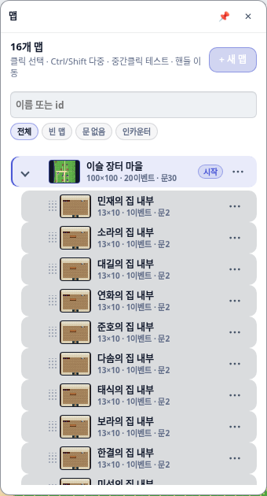
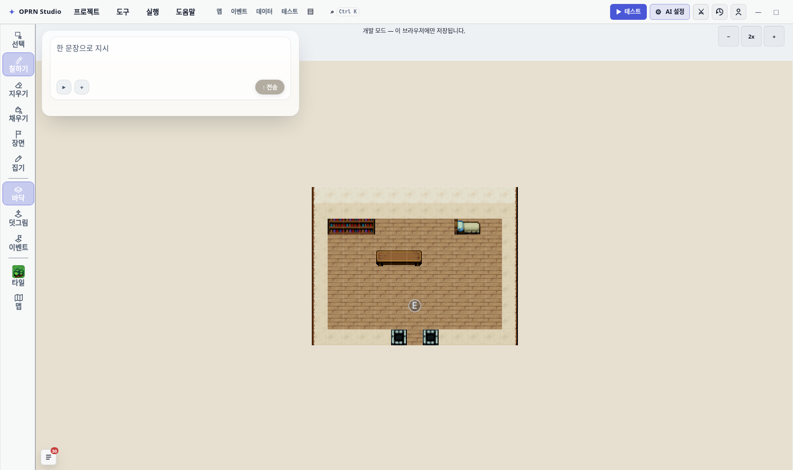
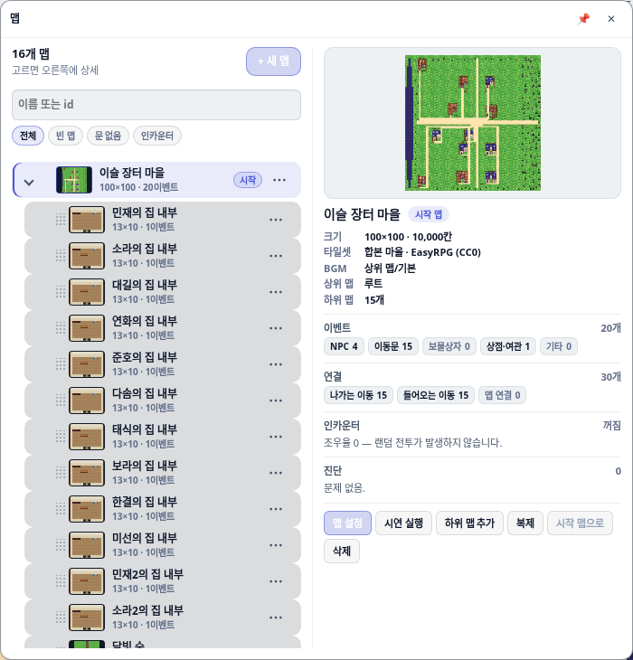
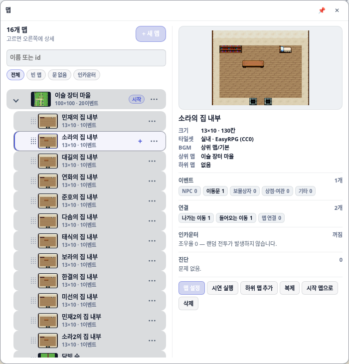
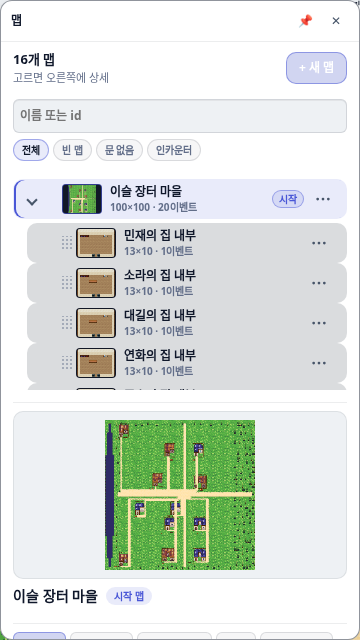

목록이 식별 정보를 담고 있지 않았다. 폭이 없어서다.
샘플 프로젝트(16맵)를 띄워 재보니 플라이아웃은 340px 한 칸이고, 행이 말하는 것은
13×10 · 1이벤트 · 문2 뿐이었다. 같은 규격으로 찍은 집 내부 12행이 전부 같은 글자였다.
행에 글자를 더 넣어도 1fr 트랙이 93.59px 이라 그대로 말줄임된다. 그래서 칸을 하나 늘렸다:
왼쪽 320px 은 이름을 읽는 목록, 오른쪽은 고른 맵의 상세.
재는 과정에서 맵을 고르면 사이드바가 스스로 사라지는 결함도 나왔다. 감독이 “불만”이라고 한 것의 절반은 이것이었을 것이다 — 2단으로 만들어도 클릭하면 사라지면 상세를 볼 방법이 없다. 원인은 “다른 모드가 덮어썼는가”를 판정하던 코드가 정상 재렌더를 매번 오진한 것이었다.

민재의 집 내부부터 아래로 전부
13×10 · 1이벤트 · 문2 — 이름만 다르고 나머지는 같은 글자다. 헤더에는 조작법 설명이
두 줄을 상시 점유하고 있다.
flyoutAlive: false). 다음 맵을 고르려면 레일의
맵 버튼을 다시 눌러야 한다.

소라의 집 내부로 따라왔다.
미리보기는 13×10 방이라 캔버스 자체가 그 비율로 만들어진다 — 고정 상자였다면 좌우에 검은 띠가 남는다.
grid-template-columns 가
단일 트랙(실측 334px)으로 접히고 상세는 목록 아래로 내려간다. 플라이아웃 폭도 360px 로 같이 줄어든다.감독이 고른 항목 전부다. 값은 src/project/mapInspection.ts 가 계산하고, 그리기는
src/editor/panels/mapInspectorPane.ts 가 한다 — 동작은 mapList.ts 가 주입한다
(그렇게 하지 않으면 두 파일이 서로를 import 한다).
| 갈래 | 보여주는 값 | 왜 이게 필요한가 |
|---|---|---|
| 맵 속성 | 미리보기, 13×10 · 130칸, 타일셋 이름, BGM, 상위 맵, 하위 맵 수 |
100×100 이 몇 칸인지 감이 안 온다. 타일셋·BGM 은 여기 오기 전엔 맵 설정 대화상자를 열어야만 보였다. |
| 이벤트 구성 | NPC · 이동문 · 보물상자 · 상점·여관 · 기타 (합 = total) | 20이벤트 는 “뭐가 20개인지”를 말하지 않는다. 한 이벤트는 한 칸에만 들어가고, 문이 달린 상점은 문으로 센다. |
| 연결·고립 진단 | 나가는 이동 / 들어오는 이동 / 맵 연결, 고립·도달 불가 경고 | 트리에서 자식으로 묶어도 문이 없으면 플레이어는 못 간다. 시작 맵에서 이동만 타고 오는 BFS 로 판정한다. |
| 인카운터 | 조우율 · 적 그룹 수 · 표 줄수, 액션 전투 여부 | 조우율이 0 이면 표가 있어도 안 뜬다. “조우율만 있고 적이 없다”는 경고로 잡는다. |
진단은 5종이다: tileset-missing, unlinked, unreachable,
encounter-empty, no-events. 경고가 있으면 접힌 아래로 내려가지 않게
맨 위로 올린다 — 손을 써야 하는 유일한 정보라서다.
renderBasicLeftRail 은 그리기 전에 “모듈에 남은 열림 상태가 지금 DOM 과 어긋나는가”를 물었다.
세 조건 중 마지막이 이랬다.
// 고치기 전
return lastContainer.querySelector('[data-testid="basic-left-rail"]') === null;의도는 “다른 모드가 이 컨테이너를 덮어썼다”를 잡는 것이었다. 그런데 이 레일을 그리는 유일한 호출자
renderTilePalette 는 clearChildren 뒤에 이 함수를 부른다. 컨테이너는 방금
비워졌으니 레일은 항상 없다. 결과:
editorState 가 바뀔 때마다 열림 상태가 날아갔다. 맵 선택, 도구 전환, 레이어 전환 전부.
editorState.set → refreshPanels → renderLeftDockPanels →
renderTilePalette 경로다.모드 전환은 subscribeEditorUiMode 가 이미 열림 상태를 초기화한다(B-5 회귀 방지). 그래서
저 조건을 지우고 컨테이너 동일성·연결성만 본다.
이 오진에 얹혀 있던 동작이 하나 있었다. 타일 플라이아웃은 캔버스를 덮는 오버레이라
“타일을 고르면 닫힌다”가 맞는 동작인데, 그 닫힘을 이 버그가 우연히 해 주고 있었다. 그대로 고치면
타일을 고른 뒤 방금 고른 타일을 가려진 자리에 칠할 수 없게 된다. 그래서 타일 클릭에서 명시적으로
dismiss 를 보낸다 — 핀을 걸어 뒀으면 존중한다. 리듀서의 outside-click 은
두 호출자의 뜻이 같아져 dismiss 로 이름을 바꿨다.
첫 판은 트리 루트를 부모로 세지 않았다. 그런데 이 저장소의 mapTree 루트는 실제 마을 맵이고
집 내부들이 그 자식이다. 그래서 집 내부 12장이 전부 상위 맵: 루트가 됐다. 합성 분류 폴더가 루트일
때만 부모로 보지 않는다. 단위테스트가 잡았다.
map-panel.modern.css 의 기존 주석에 이 상한이 실측으로 적혀 있다: 340px 1단에서 행의
1fr 트랙은 93.59px, 메타가 필요한 폭은 98px. 이미 넘쳤다는 뜻이다. 게다가
test/e2e/map-panel-modern.spec.ts 가 “이름과 메타가 자기 칸 안에서 말줄임된다” 와
“시작 배지가 메타를 덮지 않는다(겹침 0px)” 를 세 모드 전부에서 잡는다. 행에 글자를 더 넣는 방향은
그 게이트에 막힌다.
그래서 목록 칸은 이름을 읽는 폭으로 남기고, 행에서는 오히려 문N 을 뺐다 — 나가는/들어오는/연결로
쪼갠 값이 상세 칸에 있다. 다만 0 일 때는 그 자리에 고립 을 남긴다: 행에서 손을 써야 하는
유일한 신호라서다.
높이는 --map-explorer-height 한 키로 목록·상세가 같이 움직인다. 상세는 헤더·필터가 없어
+120px 를 더 쓴다 — 안 더하면 진단 줄이 접힌 아래로 내려갔다(실측). CSS 파일은 새로 만들지 않았다
(cssFileCount 래칫 유지).
| 게이트 | 결과 | 무엇을 보장하나 |
|---|---|---|
test/mapInspection.test.ts | 14 통과 (신규) | 이벤트 분류 우선순위, 분기 안 transfer, 도달성 BFS, 진단 5종, BGM 어휘, 옵션 플래그 |
test/mapList.test.ts | 13 통과 (3 신규) | 2단 마크업, 동작 줄이 스크롤러 밖에 있음, 비활성 버튼이 이유를 말함, 폴더 빈 상태 |
test/basicLeftRail.test.ts | 17 통과 (2 신규) | 컨테이너를 비운 뒤 재렌더해도 플라이아웃 생존, 타일 고르면 물러나고 핀이면 남음 |
test/basicRailFlyout.test.ts | 9 통과 | 리듀서 (dismiss 개명 반영) |
sidebarFocus + sidebarKeyboardNav | 16 통과 | 재렌더 후 포커스 생존, 로빙 탭인덱스 |
e2e map-panel-modern.spec.ts | 11 통과 | expert/standard/beginner 3모드 — 배지 겹침 0px, 텍스트 절단 0, testid 9종 생존 |
e2e map-tree-thumbnails.spec.ts | 3 통과 | 모든 행이 실제 렌더된 썸네일, 초보 플라이아웃 중첩 동일 |
tsc -p tsconfig.app.json | 0건 | — |
npm run gates:css | 통과 | 회귀 0건, undefinedVars 63→61, cssFileCount 263 유지 |
e2e 는 DEV_SERVER_PORT=9411 — 내가 띄운 서버다.
Playwright 설정이 reuseExistingServer: true 라서 기본 포트로 돌리면 다른 세션의 dev 서버에 붙어
남의 코드를 찍는다. 이 저장소에서 이미 한 번 밟은 함정이다.
| 파일 | 무엇 |
|---|---|
src/project/mapInspection.ts | 신규. 순수 모델. DOM 을 모른다 → 단위테스트 대상. collectMapInspection, reachableMapIdsFromStart, isFolderNode |
src/editor/panels/mapInspectorPane.ts | 신규. 그리기만. 동작은 주입받는다. 동작 줄은 스크롤러 밖 |
src/editor/panels/mapList.ts | 초보 분기를 2단 탐색기로. 헤더 추출, 행 메타에서 문N 제거 + 고립 추가, 조작법을 도구설명으로 |
src/editor/panels/mapThumbnail.ts | 크기를 옵션으로 열었다. 캐시 키에 크기 포함. 34px 행 썸네일과 큰 미리보기가 같은 렌더러를 쓴다 |
src/editor/panels/basicLeftRail.ts | isStaleFlyoutState 오진 제거, 타일 클릭에 명시적 dismiss |
src/editor/panels/basicRailFlyout.ts | outside-click → dismiss 개명(뜻이 같은 두 호출자) |
src/styles/editor/map-panel.modern.css | §초보 플라이아웃 2단 탐색기 추가. 1100px 분기 |
src/styles/shell/editor-ui-modes.css | .is-maps 폭 340 → 700px, 좁은 창 360px |
# 수정 후 (이 브랜치)
npx vite --host 127.0.0.1 --port 9411 --strictPort
DEV_SERVER_PORT=9411 npx playwright test test/e2e/map-panel-modern.spec.ts
# 수정 전 (기준 커밋을 별 워크트리에 띄운다 — 이 워크트리는 다른 세션과 공유된다)
git worktree add /tmp/rpg-zzu-mapbase 69ce7415 --detach
ln -s /home/main/z-project/rpg-zzu/node_modules /tmp/rpg-zzu-mapbase/node_modules
cd /tmp/rpg-zzu-mapbase && npx vite --host 127.0.0.1 --port 9412 --strictPort전후 사진을 찍은 프로브(scripts/_probe-map-capture.mts)는 진단용이라 커밋하지 않고
지웠다. 읽어낸 수치는 before-report.json / after-report.json 에 그대로 남아 있다.
before-wide-start.png / after-wide-start.png — 플라이아웃 대조 (340px 1칸 ↔ 700px 2칸)before-wide-child-nofly.png / after-wide-child.png — 행 클릭 후 대조 (사라짐 ↔ 상세가 따라옴)before-narrow.png / after-narrow.png — 1000×820 창 대조before-report.json / after-report.json — 브라우저에서 읽어낸 상자 크기·메타 문자열 통계 원본